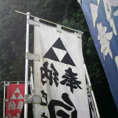

こんな所に
トライフォースの
紋章が・・・。
現実空間と
仮想の世界が
混ざっていく。
周辺を
見回すと
境内の隅に
カギのかかった
物置小屋が
あった。
ここだ。
ここしかない。
ここが
隠しダンジョンの
入り口だ。
だが、
今はまだ
中へは
入れない。
別のイベントを
クリアして
フラグを立てるか、
特別なアイテムを
ゲットしてから
このダンジョンに
挑戦する事に
なるだろう。
迷宮の
扉開きし
伝説の
「ちいさなカギ」を
手に入れるまで。
＜石垣算の事＞
三重県に
三角三郎と
いう若者が
居（お）ったそうじゃ。
ある時、
白と黒の石を
積んで
ピラミッドみたいな
石垣を
こしらえようと
考えたんじゃ。
△
△▼△
△▼△▼△
△▼△▼△▼△
四段積みを
こしらえるのに
△の石が
十個と
▼の石が
六個。
合わせて
十六個が
要（い）るんじゃ。
一般化して
ｎ段積みじゃったら
△と▼は
それぞれ何個ずつ
要る事に
なるんかの〜？